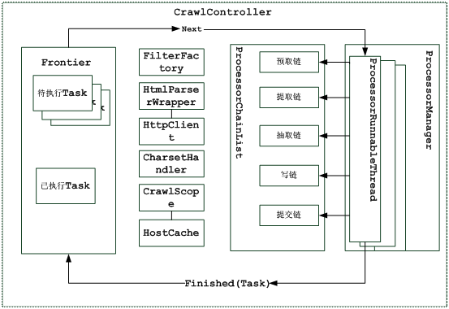

数据采集架构说明
JAVACOO-CRAWLER采用的是模块化设计,各个模块由一个控制器类（CrawlController类）来协调工作，控制器就是爬虫的核心。
CrawlController类是整个爬虫的总控制者，控制整个采集工作的的起点，决定采集任务的开始，暂停，继续，结束。
CrawlController类主要包括以下模块：分别是爬虫的配置参数，字符集帮助类， HttpCilent对象，HTML解析器包装类，爬虫边界控制器，爬虫线程控制器，处理器链，过滤器工厂,整体架构图如下：

爬虫配置参数（CrawlScope）: 存储当前爬虫的配置信息，如采集页面编码，采集过滤器列表，采集种子列表，爬虫持久对象实现类等，CrawlController根据配置参数来初始化其他模块。
字符集帮助类（CharsetHandler）：根据当前爬虫配置参数中字符集配置来初始化，备整个采集过程使用。
HttpCilent对象（HttpClient）：根据当前爬虫配置参数初始化HttpClient对象,如：设置代理，设置连接/请求超时，最大连接数等。
HTML解析器包装类（HtmlParserWrapper）：对HtmlParser解析器进行特殊化封装，以便满足采集任务的需要。
爬虫边界控制器（Frontier）：主要是加载爬行种子链接并根据加载的种子链接初始化任务队列，以备线程控制器（ProcessorManager）开启的任务执行线程（ProcessorThread）使用。
爬虫线程控制器（ProcessorManager）：主要是控制任务执行线程数量，开启指定数目的任务执行线程执行任务。
过滤器工厂（FilterFactory）：注册当前爬虫配置参数中过滤器集合，供采集任务查询使用。
主机缓存（HostCache）：缓存HttpHost对象。
处理器链（ProcessorChainList）：默认构建了5中处理链，依次是，预取链，提取链，抽取链，写链，提交链，在任务处理线程中将使用。
预取链：主要是做一些准备工作，例如，对处理进行延迟和重新处理，否决随后的操作。
提取链：主要是下载网页，进行 DNS 转换，填写请求和响应表单。
抽取链 ： 当提取完成时 ， 抽取感兴趣的 HTML 和 JavaScript 等 。
写链：存储抓取结果，可以在这一步直接做全文索引。
提交链：做和此 URL 相关操作的最后处理。